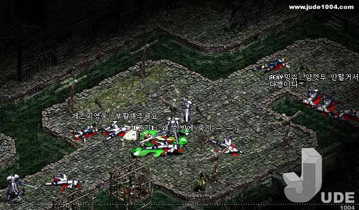
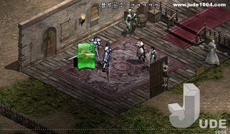

|
2002年12月27日
膠質怪的資料
來源：Jude1004.com
英文翻譯：Lineage Compendium
據Jude1004.com的報導，膠質怪(Gelatinous Cube)可能是非常危險的怪物。
它們會與蟑螂人與蛇女在亞丁城的下水道出現，它們與南瓜怪一樣有兩種攻擊模式，普通攻擊及特殊攻擊，特殊攻擊可以一擊約500HP！而另一方面它們是可以迷魅的。


韓國測試伺服器第十二章：亞丁城更新內容
原文：韓國天堂官方網站公告
英文翻譯：Lineage Compendium
1. 加入了第十二章：亞丁城。
2. 加入了新的居住地/故鄉系統(Hometown System)，玩家付出(等級 x 等級 x 50)的費用便可以註冊成為一個城鎮的居民。玩家在當地打怪時可以得到回報，每星期回報最多的玩家會成為當地市長，市長與城堡都可以影響當地的稅率。各城與地域的分佈如下：
- 奇岩，說話之島：奇岩城堡
- 肯特，古魯丁：肯特城堡
- 燃柳村：妖魔堡壘
- 銀騎士之村，風木村：風木城堡
- 海音：海音城堡
- 威頓村，象牙塔：侏儒城堡
3. 亞丁城的教堂有數名NPC，除了會有NPC會替玩家結婚外，另外亦有NPC會收取一些費用去替玩家取回死亡時所損失的部分經驗值。在正義狀態下的費用是較便宜的。
4. 傳送NPC可以傳送玩家由工亞丁城往奇岩、歐瑞或海音，但沒有傳送NPC會傳送大家往亞丁城。
5. 奧曼塔(Omen's Tower)，一個新的探險地，大家必須通過亞丁城下水道（另一個探險地）前往。
而有關亞丁城的抓圖大家可以在以下連結找到：
來源：Jude1004.com (2) (3) |